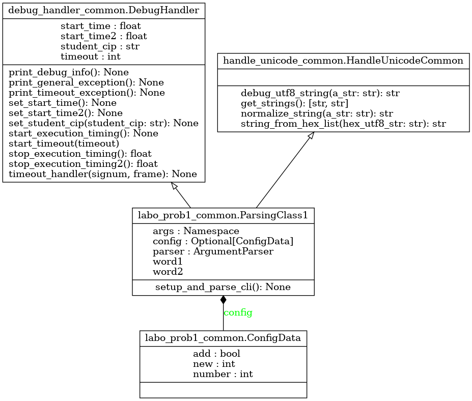

Module labo_prob1_common
Diagramme de classe
{kind=link}
Code du module
Code de base pour explorer le premier exercice du laboratoire - APP du cours GIF270
- L’exercice 1 touche le débogage et les éléments suivants :
Utilisation de points d’arrêt (breakpoints) pour l’identification de problèmes d’exécution et de logique
Identification du code qui modifie une valeur
Interruption d’exécution sans fin
Gestion de chaînes de caractères en format utf-8
Détection et traitement des exceptions
- Note :
Le traitement des arguments a été inclus dans la classe ParsingClass1, qui est utilisée dans le code principal
Tous les arguments requis sont présents et accessibles dans ParsingClass1.args
Le traitement du mode verbose vous donne un exemple de l’utilisation des arguments
La classe SmartFormatter permet d’imprimer correctement la chaîne de caractère « help » lorsqu’elle débute par « R| »
Copyright 2023-2025 Frédéric Mailhot et Université de Sherbrooke
- class labo_prob1_common.ConfigData(num: int)[source]
Bases :
object- Initialisation d’une nouvelle instance de ConfigData :
Ajoute trois champs avec leurs valeurs par défaut
- Returns :
(void) : Au retour, l’objet est initialisé
- class labo_prob1_common.ParsingClass1[source]
Bases :
HandleUnicodeCommon,DebugHandlerCréation d’un parser prédéfini pour lire les paramètres de la ligne de commande pour le premier exercice
- Initialisation d’une nouvelle instance de ParsingClass1 :
Ajoute toutes les valeurs par défaut des paramètres utilisés
Modifie les valeurs redéfinies sur la ligne de commande
- Returns :
(void) : Au retour, l’objet est initialisé
Note
Documentation créée le 20 févr. 2025.